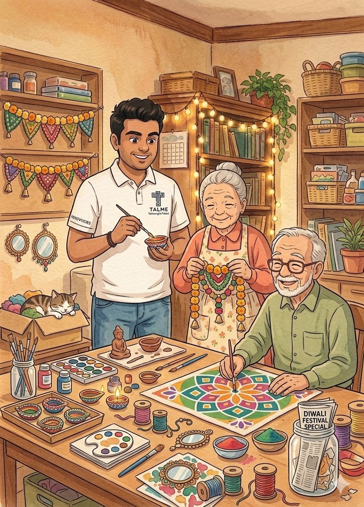
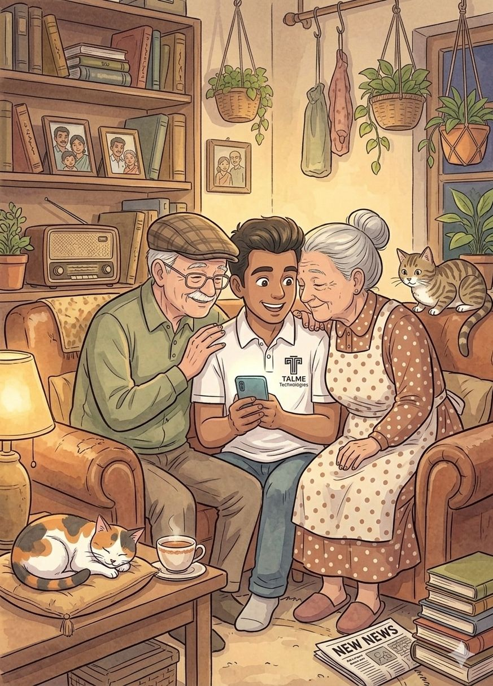
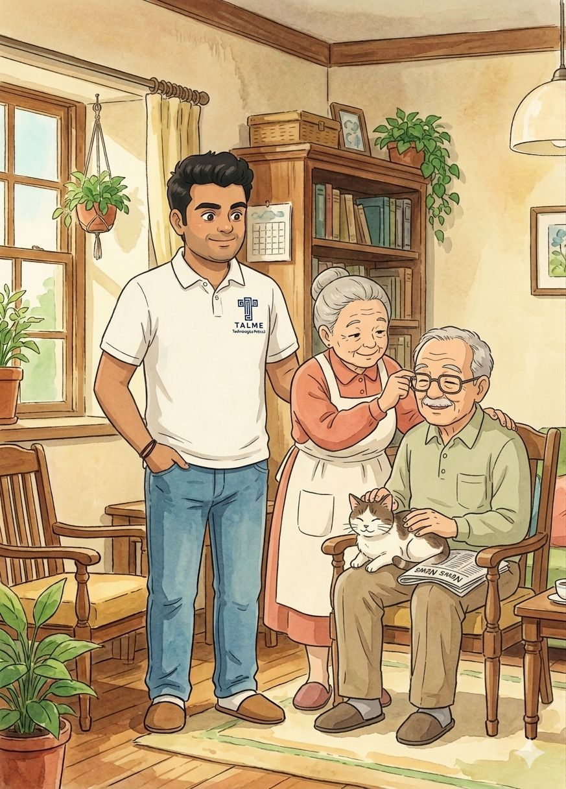
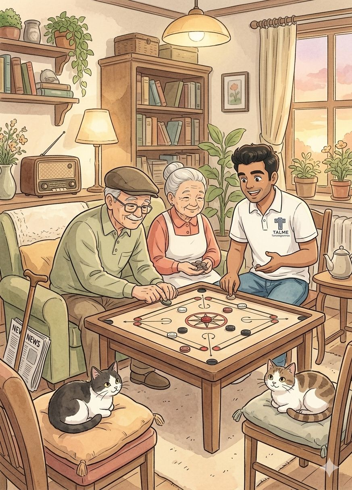

Everything warm companionship should feel like
Everything family care should be, thoughtfully extended.
A gentle illustrated world of care, conversation, and everyday joy.
Talme Companions pairs spirited, empathetic young companions with older adults for joyful company, everyday support, conversation, and meaningful time together.
About Talme Companions
A gentle bridge between generations.
We believe time, attention, and laughter can change the rhythm of a day. Talme Companions creates warm intergenerational relationships by matching seniors with caring young companions who bring curiosity, consistency, and kindness.
From long conversations over tea to accompaniment for walks, appointments, hobbies, or tech support, our approach is rooted in emotional comfort and respectful companionship.
Services
Support shaped around human connection.
Each service is designed to feel less like assistance and more like a warm, trusted presence in the day.
Signature Companionship
Joy of Quality Time
A thoughtfully curated presence for conversation, reminiscence, reading, shared meals, and meaningful time together, delivered with warmth, polish, and emotional attentiveness.
Designed for comfort, dignity, and a sense of belonging in everyday life.

Digital Confidence
Help with Everyday Technology
Calm one-to-one guidance with smartphones, video calls, digital payments, online services, and day-to-day technology, so seniors feel capable, connected, and never overwhelmed.
A patient, high-touch approach that turns hesitation into confidence.

Accompanied Outings
Walks, Outings, and Appointments
Elegant accompaniment for park walks, cafe visits, cultural outings, temple trips, medical appointments, and neighborhood routines that feel smoother with trusted company.
Ideal for families who value both safety and quality of experience.

Everyday Assistance
Errands with a Friendly Face
Shopping, pharmacy visits, paperwork assistance, and practical daily support delivered with patience, discretion, and the reassuring presence of someone dependable.
Support that feels personal and composed rather than rushed or transactional.

Signature Experience
Companionship designed with the discretion, polish, and warmth exceptional families expect.
Talme is built for families who want more than routine assistance: they want elegant service, emotional intelligence, and a standard of care that feels quietly premium at every step.
Private Matching
Thoughtfully matched companionship, never one-size-fits-all.
Every introduction is shaped around personality, pace, language, interests, and the emotional comfort of the older adult, so the relationship feels natural from the beginning.
Family Confidence
A refined service rhythm that keeps families reassured.
From first consultation to ongoing companionship, our process is calm, responsive, and high-touch, giving families the sense that every detail is being handled with care.
Everyday Elegance
Support that protects dignity while enriching daily life.
Whether the moment calls for conversation, gentle technology help, an accompanied outing, or simply a graceful presence, Talme brings warmth without ever feeling clinical or transactional.
Gallery
Moments of togetherness, activity, and trust.
A visual story of companionship at Talme Companions, from gentle daily rituals to joyful shared moments.
Illustrated moments imagined in a soft, storybook world of warmth, trust, and everyday magic.

Frequently Asked Questions
Helpful answers, thoughtfully explained.
How do I get started?
We are so glad you are here. To get started, click the button to join the trial and share a few basic details. Our team will reach out within 48 hours to understand preferences, routines, and companionship needs so we can guide you toward the right match. If you need support at any point, you can call us at +91 80 4879 5189 from Monday to Friday between 10 AM and 6 PM.
How are Talme companions and seniors matched?
Our companions are educated young graduates and professionals from varied backgrounds who are carefully vetted for empathy, intent, and reliability. We do our best to match each senior with a companion based on comfort, personality, interests, background, and the kind of connection that will feel most natural and reassuring.
Why is this a paid service?
Your first few sessions can begin as a trial so you can experience the companionship before committing further. If you choose to continue, the service becomes paid because our companions invest real time, presence, and care, and they deserve dignified, respectable compensation. This also helps us build continuity and long-term companionship for seniors.
How is the safety of senior citizens assured?
To protect the well-being of seniors, candidates go through multiple levels of interviews, empathy-based evaluation, background verification, and a structured probation period before they begin regular companionship visits.
Are seniors also checked for the safety of young companions?
Yes. Safety works both ways. Seniors and families are met by members of the core team so we can understand the environment, expectations, and any concerns in advance. Companions also have the right to exit immediately if they ever feel uncomfortable.
On what basis do you select Talme companions?
We pay close attention to authenticity, emotional maturity, communication style, and an individual’s genuine affinity toward older adults. We look for people who answer from the heart and naturally bring patience, steadiness, and warmth into relationships.
Are Talme companions paid employees?
Yes. In order to respect the time, effort, and care companions invest while visiting seniors, we compensate them fairly with dignified salaries. That financial stability helps them stay fully present and committed to building meaningful, dependable companionship.
Can the plan be customized for each senior?
Absolutely. Frequency, timing, goals, activity type, and companionship format can all be personalized so the experience feels aligned with the senior’s routine, comfort, and family context.